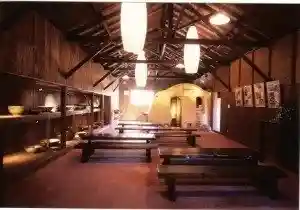

Toki Puremiamu Autoretto
Toki, Gifu · 050-1720-5598 · Official / source link
Roadside Station Toki Mino Yaki Kaido Domburi Hall
Toki, Gifu · 0572-59-5611 · Official / source link
Oribe no Sato Park
Toki, Gifu · 0572-54-2710 · Official / source link
Maruhon Suribachi Kan
Toki, Gifu · 0572-59-8730 · Official / source link

Shimoishi Kamamoto Meguri
Toki, Gifu · 0572-57-6101 · Official / source link
Dachi Kama Yameguri
Toki, Gifu · 0572-59-4188 · Official / source link
Roadside Station Shino Oribe
Toki, Gifu · 0572-55-3017 · Official / source link
Mino Yaki Dento Sangyo Hall
Toki, Gifu · 0572-55-5527 · Official / source link
Toki Mino Toji Rekishikan
Toki, Gifu · 0572-55-1245 · Official / source link
Tsurusato Hotaru Festival
Toki, Gifu · 0572-52-2176 · Official / source link
Saiki Castle Ruins
Toki, Gifu · 0572-57-6441 · Official / source link
Toki Kozan Castle Ruins
Toki, Gifu · Official / source link
Sozen Tera
Toki, Gifu · Official / source link
Saiki Shiro Samurai Yashikiato
Toki, Gifu · Official / source link
Senko no Iwa Shuzo (Kabu)
Toki, Gifu · 0572-59-8014 · Official / source link
Toki Bunka Plaza
Toki, Gifu · 0572-55-5711 · Official / source link
Oribe Hiruzu
Toki, Gifu · 0572-55-1322 · Official / source link
(VISIT Gifuken Hatsu)[KOYO BASE] Utsuwa no Manabi Mankitsu Furupakku
Toki, Gifu · Official / source link